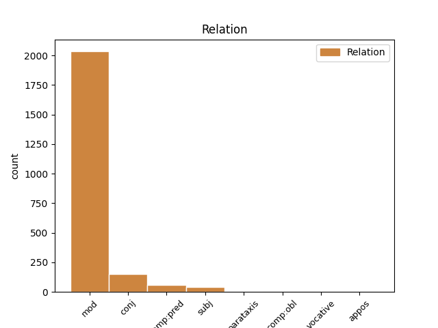
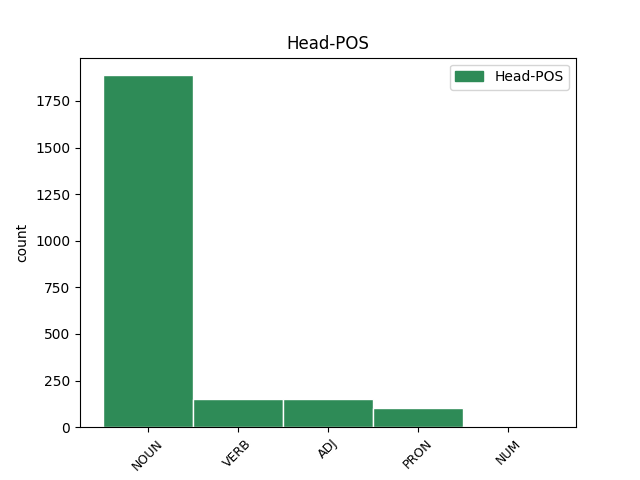
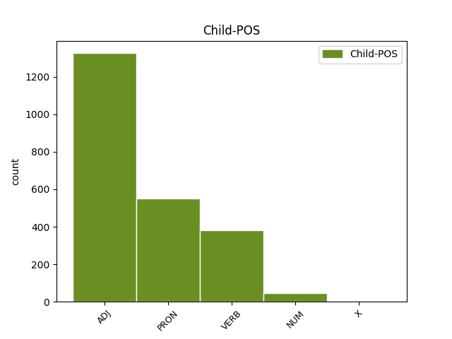

Distribution of features within this leaf



Agreement Rules sorted by frequency.
- When the dependent token is the modifer(mod) of the head token, and the dependent token is ADJ.
1 Neque _ _ _ _ 0 _ _ _
2 enim _ _ _ _ 0 _ _ _
3 ante _ _ _ _ 0 _ _ _
4 dehiscent _ _ _ _ 0 _ _ _
5 attonitae _ _ _ _ 0 _ _ _
6 magna magnus ADJ a-p---nn- Case=Nom|Gender=Neut|Number=Plur 7 mod _ LId=magnus1
7 ora os NOUN n-p---nn- Case=Nom|Gender=Neut|Number=Plur 0 _ _ _
8 domus _ _ _ _ 0 _ _ _
9 . _ _ _ _ 0 _ _ _
10 ' _ _ _ _ 0 _ _ _
1 ' _ _ _ _ 0 _ _ _
2 Non _ _ _ _ 0 _ _ _
3 hoc _ _ _ _ 0 _ _ _
4 ista iste PRON p-p---na- Case=Acc|Gender=Neut|Number=Plur 7 mod _ LId=iste1
5 sibi _ _ _ _ 0 _ _ _
6 tempus _ _ _ _ 0 _ _ _
7 spectacula spectaculum NOUN n-p---na- Case=Acc|Gender=Neut|Number=Plur 0 _ _ _
8 poscit _ _ _ _ 0 _ _ _
9 ; _ _ _ _ 0 _ _ _
1 Neque _ _ _ _ 0 _ _ _
2 enim _ _ _ _ 0 _ _ _
3 ante _ _ _ _ 0 _ _ _
4 dehiscent _ _ _ _ 0 _ _ _
5 attonitae attono VERB v-srppfg- Aspect=Perf|Case=Gen|Gender=Fem|Number=Sing|Tense=Past|VerbForm=Part|Voice=Pass 8 mod _ _
6 magna _ _ _ _ 0 _ _ _
7 ora _ _ _ _ 0 _ _ _
8 domus domus NOUN n-s---fg- Case=Gen|Gender=Fem|Number=Sing 0 _ _ _
9 . _ _ _ _ 0 _ _ _
10 ' _ _ _ _ 0 _ _ _
1 ab _ _ _ _ 0 _ _ _
2 iis _ _ _ _ 0 _ _ _
3 centuriones _ _ _ _ 0 _ _ _
4 , _ _ _ _ 0 _ _ _
5 omnis _ _ _ _ 0 _ _ _
6 lectos lectus ADJ a-p---ma- Case=Acc|Gender=Masc|Number=Plur 0 _ _ _
7 et _ _ _ _ 0 _ _ _
8 evocatos evocatus ADJ a-p---ma- Case=Acc|Gender=Masc|Number=Plur 6 conj _ LId=evocatus1|SpaceAfter=No
9 , _ _ _ _ 0 _ _ _
10 praeterea _ _ _ _ 0 _ _ _
11 ex _ _ _ _ 0 _ _ _
12 gregariis _ _ _ _ 0 _ _ _
13 militibus _ _ _ _ 0 _ _ _
14 optumum _ _ _ _ 0 _ _ _
15 quemque _ _ _ _ 0 _ _ _
16 armatum _ _ _ _ 0 _ _ _
17 in _ _ _ _ 0 _ _ _
18 primam _ _ _ _ 0 _ _ _
19 aciem _ _ _ _ 0 _ _ _
20 subducit _ _ _ _ 0 _ _ _
21 . _ _ _ _ 0 _ _ _
1 quia _ _ _ _ 0 _ _ _
2 illa _ _ _ _ 0 _ _ _
3 foeda foedus ADJ a-p---nn- Case=Nom|Gender=Neut|Number=Plur 0 _ _ _
4 atque _ _ _ _ 0 _ _ _
5 intoleranda intolero VERB v-ppgpnn- Case=Nom|Gender=Neut|Number=Plur|Tense=Pres|VerbForm=Gdv|Voice=Pass 3 conj _ LId=intolero1
6 viris _ _ _ _ 0 _ _ _
7 videbantur _ _ _ _ 0 _ _ _
8 , _ _ _ _ 0 _ _ _
9 haec _ _ _ _ 0 _ _ _
10 sequi _ _ _ _ 0 _ _ _
11 decrevistis _ _ _ _ 0 _ _ _
12 . _ _ _ _ 0 _ _ _
1 una unus NUM m-s---fn- Case=Nom|Gender=Fem|Number=Sing 2 mod _ _
2 dies dies NOUN n-s---fn- Case=Nom|Gender=Fem|Number=Sing 0 _ _ _
3 omnis _ _ _ _ 0 _ _ _
4 potuit _ _ _ _ 0 _ _ _
5 praecurrere _ _ _ _ 0 _ _ _
6 amantis _ _ _ _ 0 _ _ _
7 . _ _ _ _ 0 _ _ _
1 at _ _ _ _ 0 _ _ _
2 ex _ _ _ _ 0 _ _ _
3 altera _ _ _ _ 0 _ _ _
4 parte _ _ _ _ 0 _ _ _
5 C _ _ _ _ 0 _ _ _
6 . _ _ _ _ 0 _ _ _
7 Antonius Antonius NOUN n-s---mn- Case=Nom|Gender=Masc|Number=Sing 0 _ _ _
8 , _ _ _ _ 0 _ _ _
9 pedibus _ _ _ _ 0 _ _ _
10 aeger aeger ADJ a-s---mn- Case=Nom|Gender=Masc|Number=Sing 7 comp:pred _ LId=aeger1
11 quod _ _ _ _ 0 _ _ _
12 proelio _ _ _ _ 0 _ _ _
13 adesse _ _ _ _ 0 _ _ _
14 nequibat _ _ _ _ 0 _ _ _
15 , _ _ _ _ 0 _ _ _
16 M _ _ _ _ 0 _ _ _
17 . _ _ _ _ 0 _ _ _
18 Petreio _ _ _ _ 0 _ _ _
19 legato _ _ _ _ 0 _ _ _
20 exercitum _ _ _ _ 0 _ _ _
21 permittit _ _ _ _ 0 _ _ _
22 . _ _ _ _ 0 _ _ _
1 Catilina _ _ _ _ 0 _ _ _
2 postquam _ _ _ _ 0 _ _ _
3 fusas _ _ _ _ 0 _ _ _
4 copias _ _ _ _ 0 _ _ _
5 que _ _ _ _ 0 _ _ _
6 se sui PRON p-s---ma- Case=Acc|Gender=Masc|Number=Sing 9 subj _ LId=sui1
7 cum _ _ _ _ 0 _ _ _
8 paucis _ _ _ _ 0 _ _ _
9 relictum relinquo VERB v-srppma- Aspect=Perf|Case=Acc|Gender=Masc|Number=Sing|Tense=Past|VerbForm=Part|Voice=Pass 0 _ _ _
10 videt _ _ _ _ 0 _ _ _
11 , _ _ _ _ 0 _ _ _
12 memor _ _ _ _ 0 _ _ _
13 generis _ _ _ _ 0 _ _ _
14 atque _ _ _ _ 0 _ _ _
15 pristinae _ _ _ _ 0 _ _ _
16 suae _ _ _ _ 0 _ _ _
17 dignitatis _ _ _ _ 0 _ _ _
18 in _ _ _ _ 0 _ _ _
19 confertissumos _ _ _ _ 0 _ _ _
20 hostis _ _ _ _ 0 _ _ _
21 incurrit _ _ _ _ 0 _ _ _
22 que _ _ _ _ 0 _ _ _
23 ibi _ _ _ _ 0 _ _ _
24 pugnans _ _ _ _ 0 _ _ _
25 confoditur _ _ _ _ 0 _ _ _
26 . _ _ _ _ 0 _ _ _
1 igitur _ _ _ _ 0 _ _ _
2 P _ _ _ _ 0 _ _ _
3 . _ _ _ _ 0 _ _ _
4 Umbreno _ _ _ _ 0 _ _ _
5 quoidam _ _ _ _ 0 _ _ _
6 negotium _ _ _ _ 0 _ _ _
7 dat _ _ _ _ 0 _ _ _
8 , _ _ _ _ 0 _ _ _
9 uti _ _ _ _ 0 _ _ _
10 legatos _ _ _ _ 0 _ _ _
11 Allobrogum _ _ _ _ 0 _ _ _
12 requirat _ _ _ _ 0 _ _ _
13 que _ _ _ _ 0 _ _ _
14 eos _ _ _ _ 0 _ _ _
15 , _ _ _ _ 0 _ _ _
16 si _ _ _ _ 0 _ _ _
17 possit _ _ _ _ 0 _ _ _
18 , _ _ _ _ 0 _ _ _
19 inpellat _ _ _ _ 0 _ _ _
20 ad _ _ _ _ 0 _ _ _
21 societatem _ _ _ _ 0 _ _ _
22 belli _ _ _ _ 0 _ _ _
23 , _ _ _ _ 0 _ _ _
24 existumans existimo VERB v-sppamn- Case=Nom|Gender=Masc|Number=Sing|Tense=Pres|VerbForm=Part|Voice=Act 0 _ _ _
25 publice _ _ _ _ 0 _ _ _
26 que _ _ _ _ 0 _ _ _
27 privatim _ _ _ _ 0 _ _ _
28 aere _ _ _ _ 0 _ _ _
29 alieno _ _ _ _ 0 _ _ _
30 oppresses opprimo VERB v-prppma- Aspect=Perf|Case=Acc|Gender=Masc|Number=Plur|Tense=Past|VerbForm=Part|Voice=Pass 24 comp:pred _ SpaceAfter=No
31 , _ _ _ _ 0 _ _ _
32 praeterea _ _ _ _ 0 _ _ _
33 quod _ _ _ _ 0 _ _ _
34 natura _ _ _ _ 0 _ _ _
35 gens _ _ _ _ 0 _ _ _
36 Gallica _ _ _ _ 0 _ _ _
37 bellicosa _ _ _ _ 0 _ _ _
38 esset _ _ _ _ 0 _ _ _
39 , _ _ _ _ 0 _ _ _
40 facile _ _ _ _ 0 _ _ _
41 eos _ _ _ _ 0 _ _ _
42 ad _ _ _ _ 0 _ _ _
43 tale _ _ _ _ 0 _ _ _
44 consilium _ _ _ _ 0 _ _ _
45 adduci _ _ _ _ 0 _ _ _
46 posse _ _ _ _ 0 _ _ _
47 . _ _ _ _ 0 _ _ _
1 licuit _ _ _ _ 0 _ _ _
2 vobis _ _ _ _ 0 _ _ _
3 cum _ _ _ _ 0 _ _ _
4 summa _ _ _ _ 0 _ _ _
5 turpitudine _ _ _ _ 0 _ _ _
6 in _ _ _ _ 0 _ _ _
7 exilio _ _ _ _ 0 _ _ _
8 aetatem _ _ _ _ 0 _ _ _
9 agere _ _ _ _ 0 _ _ _
10 , _ _ _ _ 0 _ _ _
11 potuistis _ _ _ _ 0 _ _ _
12 nonnulli _ _ _ _ 0 _ _ _
13 Romae _ _ _ _ 0 _ _ _
14 amissis amitto VERB v-prppnb- Aspect=Perf|Case=Abl|Gender=Neut|Number=Plur|Tense=Past|VerbForm=Part|Voice=Pass 0 _ _ _
15 bonis bonus ADJ a-p---nb- Case=Abl|Gender=Neut|Number=Plur 14 subj _ LId=bonus1
16 alienas _ _ _ _ 0 _ _ _
17 opes _ _ _ _ 0 _ _ _
18 expectare _ _ _ _ 0 _ _ _
19 : _ _ _ _ 0 _ _ _
1 ab _ _ _ _ 0 _ _ _
2 iis _ _ _ _ 0 _ _ _
3 centuriones _ _ _ _ 0 _ _ _
4 , _ _ _ _ 0 _ _ _
5 omnis omnis ADJ a-p---ma- Case=Acc|Gender=Masc|Number=Plur 0 _ _ _
6 lectos _ _ _ _ 0 _ _ _
7 et _ _ _ _ 0 _ _ _
8 evocatos _ _ _ _ 0 _ _ _
9 , _ _ _ _ 0 _ _ _
10 praeterea _ _ _ _ 0 _ _ _
11 ex _ _ _ _ 0 _ _ _
12 gregariis _ _ _ _ 0 _ _ _
13 militibus _ _ _ _ 0 _ _ _
14 optumum _ _ _ _ 0 _ _ _
15 quemque quisque PRON p-s---ma- Case=Acc|Gender=Masc|Number=Sing 5 conj _ LId=quisque1
16 armatum _ _ _ _ 0 _ _ _
17 in _ _ _ _ 0 _ _ _
18 primam _ _ _ _ 0 _ _ _
19 aciem _ _ _ _ 0 _ _ _
20 subducit _ _ _ _ 0 _ _ _
21 . _ _ _ _ 0 _ _ _
1 Piso _ _ _ _ 0 _ _ _
2 oppugnatus oppugno VERB v-srppmn- Aspect=Perf|Case=Nom|Gender=Masc|Number=Sing|Tense=Past|VerbForm=Part|Voice=Pass 0 _ _ _
3 in _ _ _ _ 0 _ _ _
4 iudicio _ _ _ _ 0 _ _ _
5 pecuniarum _ _ _ _ 0 _ _ _
6 repetundarum _ _ _ _ 0 _ _ _
7 propter _ _ _ _ 0 _ _ _
8 quoiusdam _ _ _ _ 0 _ _ _
9 Transpadani _ _ _ _ 0 _ _ _
10 supplicium _ _ _ _ 0 _ _ _
11 iniustum _ _ _ _ 0 _ _ _
12 , _ _ _ _ 0 _ _ _
13 Catulus _ _ _ _ 0 _ _ _
14 ex _ _ _ _ 0 _ _ _
15 petitione _ _ _ _ 0 _ _ _
16 pontificatus _ _ _ _ 0 _ _ _
17 odio _ _ _ _ 0 _ _ _
18 incensus incendo VERB v-srppmn- Aspect=Perf|Case=Nom|Gender=Masc|Number=Sing|Tense=Past|VerbForm=Part|Voice=Pass 2 parataxis _ LId=incendo1|SpaceAfter=No
19 , _ _ _ _ 0 _ _ _
20 quod _ _ _ _ 0 _ _ _
21 extrema _ _ _ _ 0 _ _ _
22 aetate _ _ _ _ 0 _ _ _
23 , _ _ _ _ 0 _ _ _
24 maxumis _ _ _ _ 0 _ _ _
25 honoribus _ _ _ _ 0 _ _ _
26 usus _ _ _ _ 0 _ _ _
27 , _ _ _ _ 0 _ _ _
28 ab _ _ _ _ 0 _ _ _
29 adulescentulo _ _ _ _ 0 _ _ _
30 Caesare _ _ _ _ 0 _ _ _
31 victus _ _ _ _ 0 _ _ _
32 discesserat _ _ _ _ 0 _ _ _
33 . _ _ _ _ 0 _ _ _
1 a _ _ _ _ 0 _ _ _
2 pereat _ _ _ _ 0 _ _ _
3 , _ _ _ _ 0 _ _ _
4 quicumque quicumque PRON p-s---mn- Case=Nom|Gender=Masc|Number=Sing 0 _ _ _
5 ratis _ _ _ _ 0 _ _ _
6 et _ _ _ _ 0 _ _ _
7 vela _ _ _ _ 0 _ _ _
8 paravit _ _ _ _ 0 _ _ _
9 primus primus NUM m-s---mn- Case=Nom|Gender=Masc|Number=Sing 4 comp:pred _ _
10 et _ _ _ _ 0 _ _ _
11 invito _ _ _ _ 0 _ _ _
12 gurgite _ _ _ _ 0 _ _ _
13 fecit _ _ _ _ 0 _ _ _
14 iter _ _ _ _ 0 _ _ _
15 ! _ _ _ _ 0 _ _ _
1 sed _ _ _ _ 0 _ _ _
2 aduersante _ _ _ _ 0 _ _ _
3 conatibus _ _ _ _ 0 _ _ _
4 suis _ _ _ _ 0 _ _ _
5 M. _ _ _ _ 0 _ _ _
6 Antonio _ _ _ _ 0 _ _ _
7 consule _ _ _ _ 0 _ _ _
8 , _ _ _ _ 0 _ _ _
9 quem _ _ _ _ 0 _ _ _
10 uel _ _ _ _ 0 _ _ _
11 praecipuum _ _ _ _ 0 _ _ _
12 adiutorem _ _ _ _ 0 _ _ _
13 sperauerat _ _ _ _ 0 _ _ _
14 , _ _ _ _ 0 _ _ _
15 ac _ _ _ _ 0 _ _ _
16 ne _ _ _ _ 0 _ _ _
17 publicum _ _ _ _ 0 _ _ _
18 quidem _ _ _ _ 0 _ _ _
19 et _ _ _ _ 0 _ _ _
20 translatiuum _ _ _ _ 0 _ _ _
21 ius _ _ _ _ 0 _ _ _
22 ulla _ _ _ _ 0 _ _ _
23 in _ _ _ _ 0 _ _ _
24 re _ _ _ _ 0 _ _ _
25 sibi sui PRON p-s---md- Case=Dat|Gender=Masc|Number=Sing 30 comp:obl _ _
26 sine _ _ _ _ 0 _ _ _
27 pactione _ _ _ _ 0 _ _ _
28 grauissimae _ _ _ _ 0 _ _ _
29 mercedis _ _ _ _ 0 _ _ _
30 impertiente impertio VERB v-sppamb- Case=Abl|Gender=Masc|Number=Sing|Tense=Pres|VerbForm=Part|Voice=Act 0 _ _ _
31 , _ _ _ _ 0 _ _ _
32 ad _ _ _ _ 0 _ _ _
33 optimates _ _ _ _ 0 _ _ _
34 se _ _ _ _ 0 _ _ _
35 contulit _ _ _ _ 0 _ _ _
36 , _ _ _ _ 0 _ _ _
37 quibus _ _ _ _ 0 _ _ _
38 eum _ _ _ _ 0 _ _ _
39 inuisum _ _ _ _ 0 _ _ _
40 sentiebat _ _ _ _ 0 _ _ _
41 , _ _ _ _ 0 _ _ _
42 maxime _ _ _ _ 0 _ _ _
43 quod _ _ _ _ 0 _ _ _
44 D. _ _ _ _ 0 _ _ _
45 Brutum _ _ _ _ 0 _ _ _
46 obsessum _ _ _ _ 0 _ _ _
47 Mutinae _ _ _ _ 0 _ _ _
48 prouincia _ _ _ _ 0 _ _ _
49 a _ _ _ _ 0 _ _ _
50 Caesare _ _ _ _ 0 _ _ _
51 data _ _ _ _ 0 _ _ _
52 et _ _ _ _ 0 _ _ _
53 per _ _ _ _ 0 _ _ _
54 senatum _ _ _ _ 0 _ _ _
55 confirmata _ _ _ _ 0 _ _ _
56 expellere _ _ _ _ 0 _ _ _
57 armis _ _ _ _ 0 _ _ _
58 niteretur _ _ _ _ 0 _ _ _
59 . _ _ _ _ 0 _ _ _
1 fori _ _ _ _ 0 _ _ _
2 extruendi _ _ _ _ 0 _ _ _
3 causa _ _ _ _ 0 _ _ _
4 fuit _ _ _ _ 0 _ _ _
5 hominum _ _ _ _ 0 _ _ _
6 et _ _ _ _ 0 _ _ _
7 iudiciorum _ _ _ _ 0 _ _ _
8 multitudo _ _ _ _ 0 _ _ _
9 , _ _ _ _ 0 _ _ _
10 quae _ _ _ _ 0 _ _ _
11 uidebatur _ _ _ _ 0 _ _ _
12 non _ _ _ _ 0 _ _ _
13 sufficientibus sufficio VERB v-ppp-nb- Case=Abl|Gender=Neut|Number=Plur|Tense=Pres|VerbForm=Part 0 _ _ _
14 duobus duo NUM m-p---nb- Case=Abl|Gender=Neut|Number=Plur 13 subj _ _
15 etiam _ _ _ _ 0 _ _ _
16 tertio _ _ _ _ 0 _ _ _
17 indigere _ _ _ _ 0 _ _ _
18 ; _ _ _ _ 0 _ _ _
1 His _ _ _ _ 0 _ _ _
2 datis do VERB v-prppnb- Aspect=Perf|Case=Abl|Gender=Neut|Number=Plur|Tense=Past|VerbForm=Part|Voice=Pass 0 _ _ _
3 mandatis mando VERB v-prppnb- Aspect=Perf|Case=Abl|Gender=Neut|Number=Plur|Tense=Past|VerbForm=Part|Voice=Pass 2 subj _ LId=mando1
4 eum _ _ _ _ 0 _ _ _
5 a _ _ _ _ 0 _ _ _
6 se _ _ _ _ 0 _ _ _
7 dimittit _ _ _ _ 0 _ _ _
8 . _ _ _ _ 0 _ _ _
1 die _ _ _ _ 0 _ _ _
2 senatus _ _ _ _ 0 _ _ _
3 numquam _ _ _ _ 0 _ _ _
4 patres _ _ _ _ 0 _ _ _
5 nisi _ _ _ _ 0 _ _ _
6 in _ _ _ _ 0 _ _ _
7 curia _ _ _ _ 0 _ _ _
8 salutauit _ _ _ _ 0 _ _ _
9 et _ _ _ _ 0 _ _ _
10 quidem _ _ _ _ 0 _ _ _
11 sedentis sedeo VERB v-ppp-ma- Case=Acc|Gender=Masc|Number=Plur|Tense=Pres|VerbForm=Part 0 _ _ _
12 ac _ _ _ _ 0 _ _ _
13 nominatim _ _ _ _ 0 _ _ _
14 singulos singuli NUM m-p---ma- Case=Acc|Gender=Masc|Number=Plur 11 conj _ _
15 nullo _ _ _ _ 0 _ _ _
16 submonente _ _ _ _ 0 _ _ _
17 ; _ _ _ _ 0 _ _ _
1 audax audax ADJ a-s---fv- Case=Voc|Gender=Fem|Number=Sing 6 vocative _ LId=audax1
2 a _ _ _ _ 0 _ _ _
3 nimium _ _ _ _ 0 _ _ _
4 , _ _ _ _ 0 _ _ _
5 nostro _ _ _ _ 0 _ _ _
6 dolitura doleo VERB v-sfpafn- Case=Nom|Gender=Fem|Number=Sing|Tense=Fut|VerbForm=Part|Voice=Act 0 _ _ _
7 periclo _ _ _ _ 0 _ _ _
8 , _ _ _ _ 0 _ _ _
9 si _ _ _ _ 0 _ _ _
10 quid _ _ _ _ 0 _ _ _
11 forte _ _ _ _ 0 _ _ _
12 tibi _ _ _ _ 0 _ _ _
13 durius _ _ _ _ 0 _ _ _
14 inciderit _ _ _ _ 0 _ _ _
15 ! _ _ _ _ 0 _ _ _
1 ceterum _ _ _ _ 0 _ _ _
2 mihi _ _ _ _ 0 _ _ _
3 in _ _ _ _ 0 _ _ _
4 dies _ _ _ _ 0 _ _ _
5 magis _ _ _ _ 0 _ _ _
6 animus _ _ _ _ 0 _ _ _
7 accenditur _ _ _ _ 0 _ _ _
8 , _ _ _ _ 0 _ _ _
9 quom _ _ _ _ 0 _ _ _
10 considero _ _ _ _ 0 _ _ _
11 , _ _ _ _ 0 _ _ _
12 quae qui PRON p-s---fn- Case=Nom|Gender=Fem|Number=Sing 15 comp:pred _ LId=qui1
13 condicio _ _ _ _ 0 _ _ _
14 vitae _ _ _ _ 0 _ _ _
15 futura sum VERB v-sfpafn- Case=Nom|Gender=Fem|Number=Sing|Tense=Fut|VerbForm=Part|Voice=Act 0 _ _ _
16 sit _ _ _ _ 0 _ _ _
17 , _ _ _ _ 0 _ _ _
18 nisi _ _ _ _ 0 _ _ _
19 nosmet _ _ _ _ 0 _ _ _
20 ipsi _ _ _ _ 0 _ _ _
21 vindicamus _ _ _ _ 0 _ _ _
22 in _ _ _ _ 0 _ _ _
23 libertatem _ _ _ _ 0 _ _ _
24 . _ _ _ _ 0 _ _ _
1 sed _ _ _ _ 0 _ _ _
2 urbana _ _ _ _ 0 _ _ _
3 plebes plebs NOUN n-s---fn- Case=Nom|Gender=Fem|Number=Sing 0 _ _ _
4 , _ _ _ _ 0 _ _ _
5 ea is PRON p-s---fn- Case=Nom|Gender=Fem|Number=Sing 3 appos _ LId=is1
6 vero _ _ _ _ 0 _ _ _
7 praeceps _ _ _ _ 0 _ _ _
8 erat _ _ _ _ 0 _ _ _
9 de _ _ _ _ 0 _ _ _
10 multis _ _ _ _ 0 _ _ _
11 causis _ _ _ _ 0 _ _ _
12 . _ _ _ _ 0 _ _ _
1 At _ _ _ _ 0 _ _ _
2 Romae _ _ _ _ 0 _ _ _
3 Lentulus _ _ _ _ 0 _ _ _
4 cum _ _ _ _ 0 _ _ _
5 ceteris _ _ _ _ 0 _ _ _
6 , _ _ _ _ 0 _ _ _
7 qui _ _ _ _ 0 _ _ _
8 principes _ _ _ _ 0 _ _ _
9 coniurationis _ _ _ _ 0 _ _ _
10 erant _ _ _ _ 0 _ _ _
11 , _ _ _ _ 0 _ _ _
12 paratis _ _ _ _ 0 _ _ _
13 ut _ _ _ _ 0 _ _ _
14 videbatur _ _ _ _ 0 _ _ _
15 magnis _ _ _ _ 0 _ _ _
16 copiis _ _ _ _ 0 _ _ _
17 constituerant _ _ _ _ 0 _ _ _
18 , _ _ _ _ 0 _ _ _
19 uti _ _ _ _ 0 _ _ _
20 , _ _ _ _ 0 _ _ _
21 quom _ _ _ _ 0 _ _ _
22 Catilina _ _ _ _ 0 _ _ _
23 in _ _ _ _ 0 _ _ _
24 agrum ager NOUN n-s---ma- Case=Acc|Gender=Masc|Number=Sing 0 _ _ _
25 Aefulanum Aefulanus X ------ma- Case=Acc|Gender=Masc 24 mod _ _
26 cum _ _ _ _ 0 _ _ _
27 exercitu _ _ _ _ 0 _ _ _
28 venisset _ _ _ _ 0 _ _ _
29 , _ _ _ _ 0 _ _ _
30 L _ _ _ _ 0 _ _ _
31 . _ _ _ _ 0 _ _ _
32 Bestia _ _ _ _ 0 _ _ _
33 tribunus _ _ _ _ 0 _ _ _
34 plebis _ _ _ _ 0 _ _ _
35 contione _ _ _ _ 0 _ _ _
36 habita _ _ _ _ 0 _ _ _
37 quereretur _ _ _ _ 0 _ _ _
38 de _ _ _ _ 0 _ _ _
39 actionibus _ _ _ _ 0 _ _ _
40 Ciceronis _ _ _ _ 0 _ _ _
41 que _ _ _ _ 0 _ _ _
42 belli _ _ _ _ 0 _ _ _
43 gravissumi _ _ _ _ 0 _ _ _
44 invidiam _ _ _ _ 0 _ _ _
45 optumo _ _ _ _ 0 _ _ _
46 consuli _ _ _ _ 0 _ _ _
47 inponeret _ _ _ _ 0 _ _ _
48 : _ _ _ _ 0 _ _ _
Disagree Examples:
1 Ego _ _ _ _ 0 _ _ _
2 porro _ _ _ _ 0 _ _ _
3 illius ille PRON p-s---mg- Case=Gen|Gender=Masc|Number=Sing 4 mod _ _
4 semita semita NOUN n-s---fb- Case=Abl|Gender=Fem|Number=Sing 0 _ _ _
5 feci _ _ _ _ 0 _ _ _
6 viam _ _ _ _ 0 _ _ _
7 , _ _ _ _ 0 _ _ _
8 Et _ _ _ _ 0 _ _ _
9 cogitavi _ _ _ _ 0 _ _ _
10 plura _ _ _ _ 0 _ _ _
11 quam _ _ _ _ 0 _ _ _
12 reliquerat _ _ _ _ 0 _ _ _
13 , _ _ _ _ 0 _ _ _
14 In _ _ _ _ 0 _ _ _
15 calamitatem _ _ _ _ 0 _ _ _
16 deligens _ _ _ _ 0 _ _ _
17 quaedam _ _ _ _ 0 _ _ _
18 meam _ _ _ _ 0 _ _ _
19 . _ _ _ _ 0 _ _ _
1 Suspicione _ _ _ _ 0 _ _ _
2 si _ _ _ _ 0 _ _ _
3 quis _ _ _ _ 0 _ _ _
4 errabit _ _ _ _ 0 _ _ _
5 sua _ _ _ _ 0 _ _ _
6 Et _ _ _ _ 0 _ _ _
7 rapiet _ _ _ _ 0 _ _ _
8 ad _ _ _ _ 0 _ _ _
9 se _ _ _ _ 0 _ _ _
10 quod _ _ _ _ 0 _ _ _
11 erit _ _ _ _ 0 _ _ _
12 commune communis ADJ a-s---nn- Case=Nom|Gender=Neut|Number=Sing 0 _ _ _
13 omnium omnis ADJ a-p---mg- Case=Gen|Gender=Masc|Number=Plur 12 mod _ SpaceAfter=No
14 , _ _ _ _ 0 _ _ _
15 Stulte _ _ _ _ 0 _ _ _
16 nudabit _ _ _ _ 0 _ _ _
17 animi _ _ _ _ 0 _ _ _
18 conscientiam _ _ _ _ 0 _ _ _
19 . _ _ _ _ 0 _ _ _
1 quidam _ _ _ _ 0 _ _ _
2 contra _ _ _ _ 0 _ _ _
3 miseriti misereor VERB v-prpdmn- Aspect=Perf|Case=Nom|Gender=Masc|Number=Plur|Tense=Past|VerbForm=Part|Voice=Act 0 _ _ _
4 Periturae pereo VERB v-sfpafg- Case=Gen|Gender=Fem|Number=Sing|Tense=Fut|VerbForm=Part|Voice=Act 3 comp:pred _ _
5 quippe _ _ _ _ 0 _ _ _
6 , _ _ _ _ 0 _ _ _
7 quamvis _ _ _ _ 0 _ _ _
8 nemo _ _ _ _ 0 _ _ _
9 laederet _ _ _ _ 0 _ _ _
10 , _ _ _ _ 0 _ _ _
11 Misere _ _ _ _ 0 _ _ _
12 panem _ _ _ _ 0 _ _ _
13 ut _ _ _ _ 0 _ _ _
14 sustineret _ _ _ _ 0 _ _ _
15 spiritum _ _ _ _ 0 _ _ _
16 . _ _ _ _ 0 _ _ _
1 abeunt _ _ _ _ 0 _ _ _
2 securi _ _ _ _ 0 _ _ _
3 domum _ _ _ _ 0 _ _ _
4 , _ _ _ _ 0 _ _ _
5 Quasi _ _ _ _ 0 _ _ _
6 inventuri invenio VERB v-pfpamn- Case=Nom|Gender=Masc|Number=Plur|Tense=Fut|VerbForm=Part|Voice=Act 0 _ _ _
7 mortuam morior VERB v-srpdfa- Aspect=Perf|Case=Acc|Gender=Fem|Number=Sing|Tense=Past|VerbForm=Part|Voice=Act 6 comp:pred _ _
8 postridie _ _ _ _ 0 _ _ _
9 . _ _ _ _ 0 _ _ _
1 illa _ _ _ _ 0 _ _ _
2 irascitur _ _ _ _ 0 _ _ _
3 Nec _ _ _ _ 0 _ _ _
4 gloriantis _ _ _ _ 0 _ _ _
5 sustinet _ _ _ _ 0 _ _ _
6 fratris _ _ _ _ 0 _ _ _
7 iocos _ _ _ _ 0 _ _ _
8 , _ _ _ _ 0 _ _ _
9 Accipiens accipio VERB v-spp-fn- Case=Nom|Gender=Fem|Number=Sing|Tense=Pres|VerbForm=Part 0 _ _ _
10 , _ _ _ _ 0 _ _ _
11 quid quis PRON p-s---nn- Case=Nom|Gender=Neut|Number=Sing 9 vocative _ LId=quis1
12 enim _ _ _ _ 0 _ _ _
13 ? _ _ _ _ 0 _ _ _